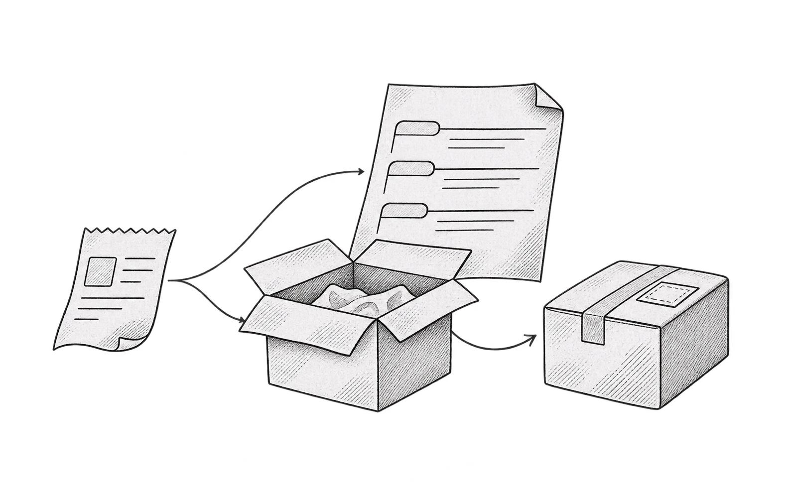
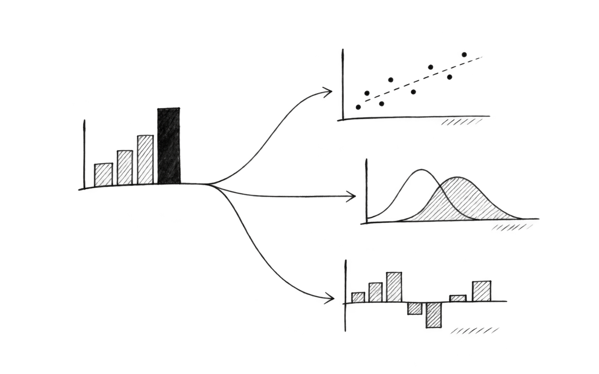
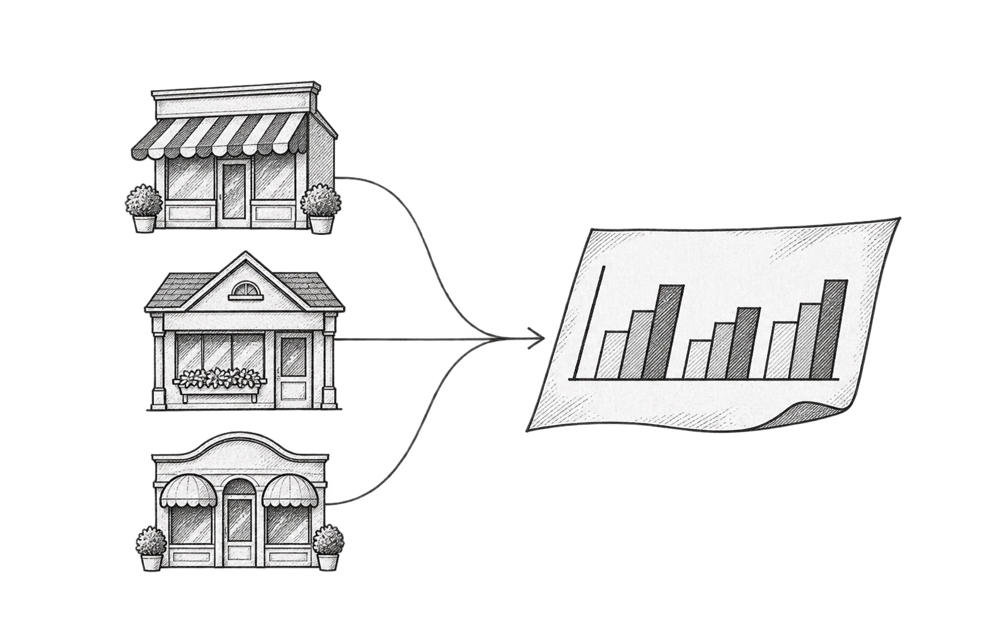
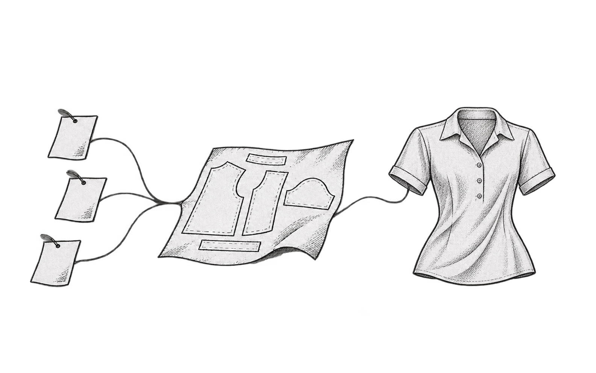
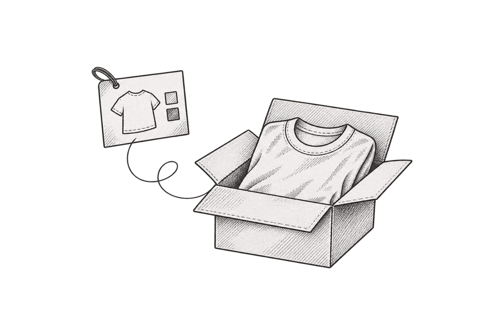
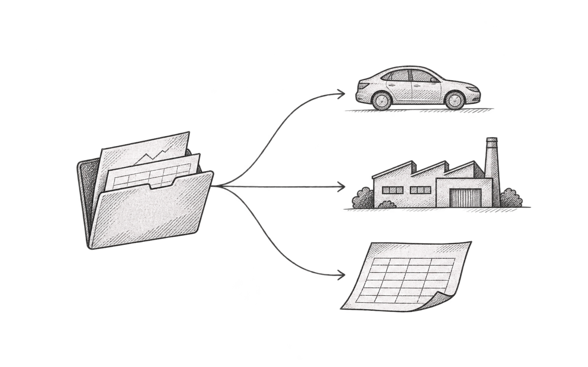

build
a few case studies from my work at shopify, amazon and pwc.
shopify
i lead product for orders & returns. before that, i led the merchant-facing analytics experience.

self-serve after checkout
buyerself-serve
market-basedrules

analytics redesign
all
merchants
flexible
exploration

multi-store reporting
plus
enterprise
top 5
pain point
other work includes cohort analysis, benchmarks, ranking and comparison of top performers, order editing and financial accuracy.
amazon
my roles covered retail planning, fashion, subscriptions and healthcare.

the drop
0→1
demand system
global
launch

t-shirt club
multi-million
dollar business
e2e
ownership
other work included retail reporting tools, subscription strategy, and clinician routing and dispatch.
pwc
strategy, valuation and financial due diligence.

business valuation
$2.5M+
account fees
#1
global
airline turnaround
turnaround
strategy
other work included acquisition due diligence, automotive strategy and financial models for startups.